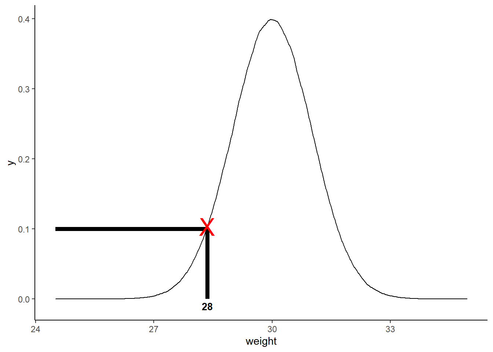

Before explaining the difference between a probability and a likelihood, let’s first check visually. Let’s say we have data from a normal distribution with mean = 30 and standard deviation = 1. The probability of getting less than the observed value 28 given the distribution is \(P(X<=28~|~N(30, 1))\) which is the area under the curve below 28 as shown in the graph.
library(ggplot2)
m <- 30
std <- 1
df <- data.frame(weight = rnorm(n = 1000000, mean = m, sd = std))
cutoff <- quantile(df$weight, .05)
pnorm(cutoff, mean = m , sd = std) # Check area under the curve that's below the cutoff (pnorm() returns area under the curve)## 5%
## 0.0500904g1 <- ggplot(df, aes(x = weight)) +
geom_density() +
stat_function(fun = dnorm, args = list(mean = m, sd = std), xlim = c(min(df$weight), cutoff), geom = "area") +
theme_classic() +
annotate("text", x = cutoff, y = -.01, label = as.character(round(cutoff)), size = 3.5, fontface = "bold") The likelihood of a distribution with mean = 30 and
standard deviation = 1 given an observation = 28 is the y-axis value of
our normal probability density function from the observed data point
i.e., \(L(N(30, 1)~|~X=28)\). We can
get the y-axis value using dnorm
density_value <- dnorm(x = cutoff, mean = 30, sd = 1)library(grid)
ggplot(df, aes(x = weight)) +
geom_density() +
theme_classic() +
annotate("text", x = cutoff, y = -.01, label = as.character(round(cutoff)), size = 3.5, fontface = "bold") +
geom_segment(aes(x = 24.5, xend = cutoff, y = .1, yend = .1), color = "black", size = 2) +
geom_segment(aes(x = cutoff, xend = cutoff, y = 0, yend = .1), color = "black", size = 2) +
annotation_custom(textGrob("X", gp = gpar(col = "red", fontsize = 25)), xmin = cutoff, xmax = cutoff, ymin = density_value, ymax = density_value) 
Simply put, a probability is area under the curve in a fixed distribution and mathematically we say:
\[P(Data|Distribution)\]
A likelihood is is a y-axis value for a fixed data point with distributions that can be moved and mathematically we say:
\[P(Distribution|Data)\]